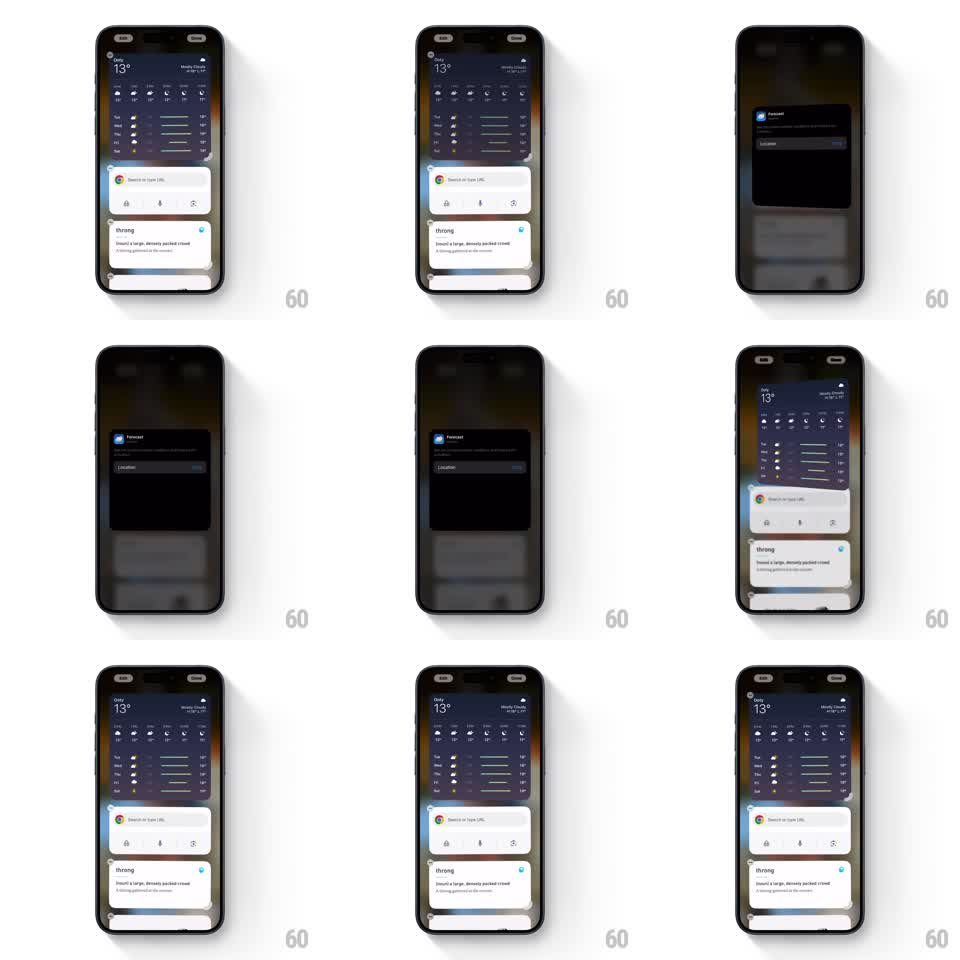

Media
Frame-by-frame

Rebuild this interaction 1:1: the iOS Weather widget's edit flip - in home screen edit mode, tapping the widget rotates it 180 degrees in 3D to reveal the Forecast configuration back, and it flips back on Done.

Rebuild this interaction 1:1: the iOS Weather widget's edit flip - in home screen edit mode, tapping the widget rotates it 180 degrees in 3D to reveal the Forecast configuration back, and it flips back on Done.
## Integration
Integration: stack-agnostic spec - springs given as stiffness/damping, timed motions as duration + curve; map every value to your framework and animation library of choice.
## Scene
A home screen in jiggle mode (badges on widgets, dimmed wallpaper): a large Weather widget (Oslo 13°, hourly icons, weekly bars) stacked over other app widgets. Tapped, the Weather widget rotates on its vertical axis to a dark back face ("Forecast" title, Location row with a blue link), then flips forward again when done.
## Motion spec
Pattern: 3D card flip, gesture-driven, ~700ms per flip.
- On tap, the widget lifts slightly (scale 1 to 1.03, shadow deepening) and rotates around its vertical center axis from 0 to 180 degrees (650ms, ease-in-out), the front face fading out past 90 degrees as the back face fades in.
- The back face is mirrored-correct (it reads properly when the rotation completes), with its own slight parallax settling (100ms).
- Surrounding widgets keep wiggling; the flipping widget leaves jiggle mode while turned.
- On Done (or tapping outside), it flips back with the same motion and rejoins the wiggle.
## Calibration
- Perspective must be visible: edges foreshorten as the card turns, no flat crossfade.
- The lift happens in the first 150ms and settles in the last 150ms of the flip.
## Reduced motion
Front and back crossfade.
## Don't miss
- The back is dark and quiet - a configuration panel, not a second UI.
- The widget's rounded corners and shadow stay consistent through the rotation.